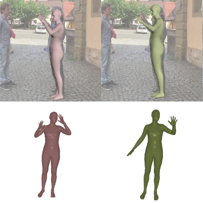
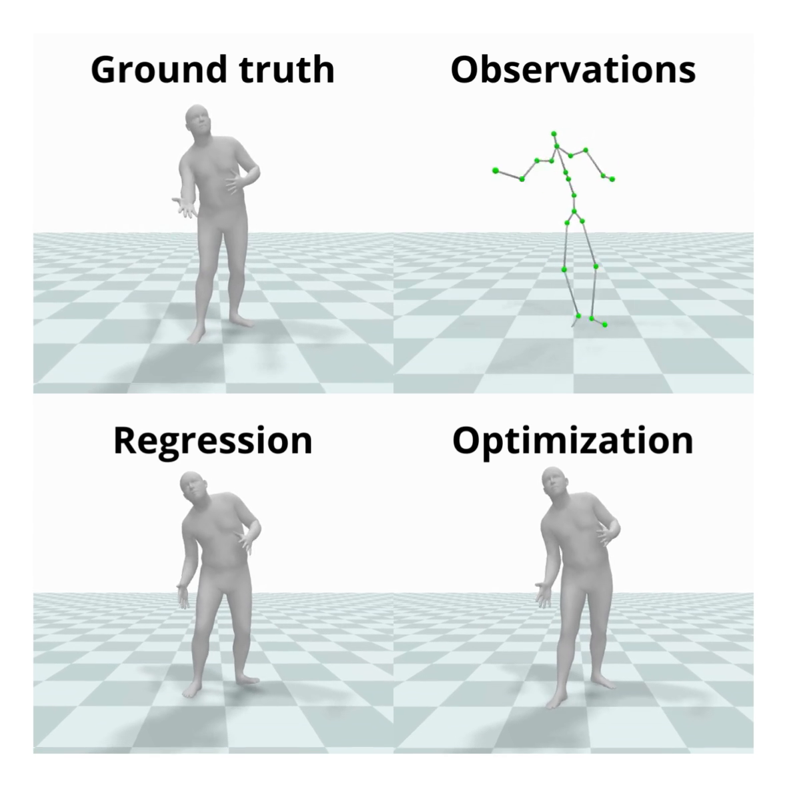

|

|
MEGA: Masked Generative Autoencoder for Human Mesh Recovery
Guénolé Fiche,
Simon Leglaive,
Xavier Alameda-Pineda,
Francesc
Moreno-Noguer
CVPR, 2025
project page /
bibtex /
code
This work proposes a new approach to human mesh recovery (HMR) based on masked generative modeling.
By tokenizing the human pose and shape, we formulate the HMR task as generating a sequence
of discrete tokens conditioned on an input image.
|
|
|
VQ-HPS: Human Pose and Shape Estimation in a
Vector-Quantized Latent Space
Guénolé Fiche,
Simon Leglaive,
Xavier Alameda-Pineda,
Antonio Agudo,
Francesc
Moreno-Noguer
European Conference on Computer Vision (ECCV), 2024
project page /
bibtex /
code
This work introduces a novel paradigm to address the human pose and shape estimation problem,
involving a low-dimensional
discrete latent representation of the human mesh and framing human pose and shape estimation as a
classification task.
|
|

|
Motion-DVAE: Unsupervised learning for fast human motion denoising
Guénolé Fiche,
Simon Leglaive,
Xavier Alameda-Pineda,
Renaud Séguier,
ACM MIG, 2023
project page /
bibtex
We introduce a motion prior to capture the short-term dependencies of human motion and an
unsupervised learned denoising
method unifying regression- and optimization-based approaches in a single framework for real-time 3D
human pose estimation.
|
|
|
SwimXYZ: A large-scale dataset of synthetic swimming motions and videos
Guénolé Fiche,
Vincent Sevestre,
Camila Gonzalez-Barral,
Simon Leglaive,
Renaud Séguier,
ACM MIG, 2023
project page /
bibtex
We introduce SwimXYZ, a synthetic dataset of swimming motions and videos.
SwimXYZ contains 3.4 million frames annotated with ground truth 2D and 3D joints,
as well as 240 sequences of swimming motions in the SMPL parameters format.
|
Website source code borrowed from Jon
Barron's public academic website.
|
|
{kind=link}